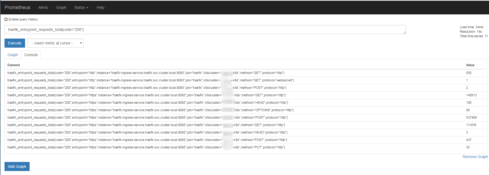

背景
由于容器化和微服务的大力发展，Kubernetes基本已经统一了容器管理方案，当我们使用Kubernetes来进行容器化管理的时候，全面监控Kubernetes也就成了我们第一个需要探索的问题。我们需要监控kubernetes的ingress、service、deployment、pod……等等服务，以达到随时掌握Kubernetes集群的内部状况。
此文章也是Prometheus监控系列的第三篇，具体描述了在Kubernetes中使用Prometheus来采集业务指标。多数为思想指导，会列出两个例子。第一个例子是针对部署在Kubernetes中的服务，另外一个例子是非Kubernetes部署的服务。前者为使用“动态采集”，后者使用“静态采集”。
概念
要使用Prometheus实现自动采集业务指标数据真的非常简单，只需要2步
1、业务侧实现一个接口，返回Prometheus规范化数据，如下：
traefik_entrypoint_requests_total{code="302",entrypoint="https",method="HEAD",protocol="http"} 1
traefik_entrypoint_requests_total{code="302",entrypoint="https",method="POST",protocol="http"} 1
traefik_entrypoint_requests_total{code="304",entrypoint="http",method="GET",protocol="http"} 15
traefik_entrypoint_requests_total{code="304",entrypoint="https",method="GET",protocol="http"} 5951
traefik_entrypoint_requests_total{code="400",entrypoint="https",method="GET",protocol="http"} 149
traefik_entrypoint_requests_total{code="403",entrypoint="http",method="GET",protocol="http"} 2
traefik_entrypoint_requests_total{code="403",entrypoint="https",method="HEAD",protocol="http"} 2
traefik_entrypoint_requests_total{code="404",entrypoint="http",method="GET",protocol="http"} 680
traefik_entrypoint_requests_total{code="404",entrypoint="http",method="HEAD",protocol="http"} 15
traefik_entrypoint_requests_total{code="404",entrypoint="http",method="POST",protocol="http"} 674
- 每行代表一个监控项，以KEY VALUE形式返回，KEY可以带上0个或多个属性，多个属性以 “，”分隔。在Prometheus中查询数据的时候，可以用这些属性作为筛选条件。
2、运维侧部署的时候，在svc上带上3个标签
apiVersion: v1
kind: Service
metadata:
name: xxx-svc
namespace: xxx-qa
annotations:
prometheus.io/scrape: 'true'
prometheus.io/path: '/monitor/live-data'
prometheus.io/port: '9098'
- prometheus.io/scrape： 自动采集指标数据开关，默认为false；Prometheus会在k8s集群中自动检测哪些svc是打开了这个开关
- prometheus.io/path： 采集指标数据路径，默认为 /metrics
- prometheus.io/port： 采集指标端口，默认为svc暴露的端口
加上这3个annotations，prometheus会自动采集xxx-svc:9080/monitor/live-data的数据。
数据采集
动态采集
部署在Kubernetes中服务。这里使用traefik做示范
1、业务侧实现接口，返回格式化监控数据。traefik本身自带监控接口，只需要在启动的时候加上 –web.metrics.prometheus 选项就行了
apiVersion: extensions/v1beta1
kind: Deployment
metadata:
name: traefik-ingress-controller
namespace: traefik
labels:
k8s-app: traefik-ingress-lb
spec:
replicas: 1
selector:
matchLabels:
k8s-app: traefik-ingress-lb
template:
metadata:
labels:
k8s-app: traefik-ingress-lb
name: traefik-ingress-lb
spec:
serviceAccountName: traefik-ingress-controller
terminationGracePeriodSeconds: 60
volumes:
- name: ssl
secret:
secretName: traefik-cert
- name: config
configMap:
name: traefik-conf
containers:
- image: traefik:v1.7.6
name: traefik-ingress-lb
volumeMounts:
- mountPath: "/ssl"
name: "ssl"
- mountPath: "/config"
name: "config"
ports:
- name: http
containerPort: 80
- name: admin
containerPort: 8080
- name: https
containerPort: 443
args:
- --configFile=/config/traefik.toml
- --web
- --kubernetes
- --logLevel=INFO
- --web.metrics.prometheus
- --web.metrics
2、部署svc的时候加上
apiVersion: v1
kind: Service
metadata:
name: traefik-ingress-service
namespace: traefik
annotations:
prometheus.io/scrape: 'true'
prometheus.io/port: '8080'
spec:
externalTrafficPolicy: Local
selector:
k8s-app: traefik-ingress-lb
ports:
- protocol: TCP
port: 80
name: web
- protocol: TCP
port: 443
name: https
type: LoadBalancer
prometheus.io/path可以不用指定了，默认就是 /metrics
现在就可以在Prometheus页面查询到traefik的监控数据了

Grafana监控Traefik面板：https://grafana.com/dashboards/9682
静态采集
部署在非Kubernetes中的服务。这里使用Alertmanager来做示范，Alertmanager是没有部署在Kubernetes里面的。
1、业务侧实现接口，返回格式化监控数据。Alertmanager也自带监控接口，路径就是 /metrics
2、修改Prometheus-Server配置文件，新增加一个job_name静态配置。
- job_name: "alertmanager"
static_configs:
- targets: ['alertmanager.xxxx.com:80']
targets：监控数据获取地址
稍等2分钟，也可以看到Prometheus的监控数据了

Grafana监控Alertmanager面板：https://grafana.com/dashboards/9741
结束
此文章是“使用prometheus完美监控kubernetes集群”系列的第三篇，也基本上把prometheus在kubernetes中的使用讲的差不多了，剩下的更多是自己平时的使用探索，如果有不理解的地方，欢迎随时后台留言。